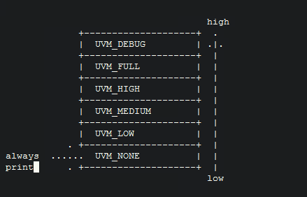

Uvm Reporter Mechanism
UVM Reporter Mechanism
UVM的log打印分为6个等级，如下图所示:
由下至上，打印的等级逐级升高。假设在一个task里面有如下的代码，那么即将打印的是后三条。
`uvm_info("ID0", "this is debug message", UVM_DEBUG)
`uvm_info("ID1", "this is full message", UVM_FULL)
`uvm_info("ID2", "this is high message", UVM_HIGH)
`uvm_info("ID3", "this is medium message", UVM_MEDIUM)
`uvm_info("ID4", "this is low message", UVM_LOW)
`uvm_info("ID5", "this is none message", UVM_NONE)
因为仿真器默认的verbosity是UVM_MEDIUM，所以ID0~ID2的信息没有打印出来。可以通过命令行来修改打印的verbosity，比如:
+uvm_set_verbosity=component_name,id,verbosity,phase_name,optional_time
`uvm_warning、`uvm_error、`uvm_fatal可以看作是verbosity都是UVM_NONE的`uvm_info，所以它们是默认打印的。但是它们的行为可以通过命令行改变，比如默认的`uvm_fatal是要立刻停止仿真的，但是可以通过+uvm_set_action来改变它。
+uvm_set_action=component,id,severity,action
这里可以做简单的练习: my simple test